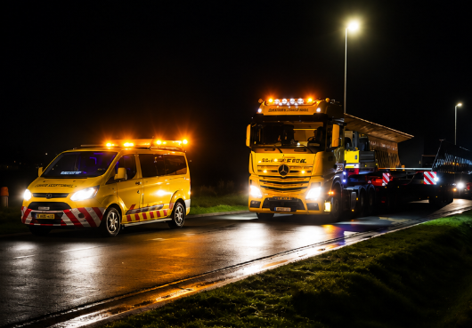

VLM signifie Mesures de gestion du trafic. Cela peut inclure le retrait temporaire du mobilier urbain, l’organisation d’interdictions de stationner ou la pose de plaques de roulage.
Ces mesures contribuent à une exécution sûre et responsable du transport exceptionnel. B-Exceptional vise à décharger autant que possible le transporteur et agit comme point de contact pour les permis, l’accompagnement, les VLM et la reconnaissance de l’itinéraire.
